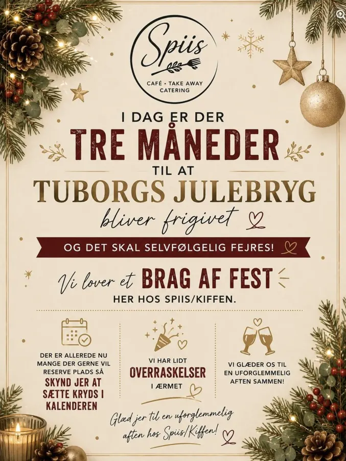
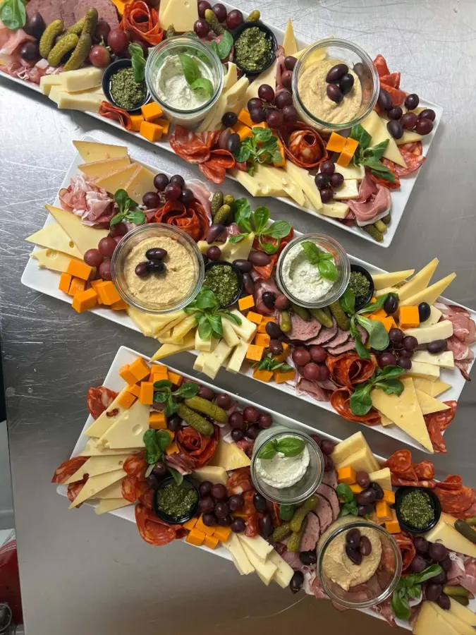

12. oktoberJ-dag i Kiffen
Vi lover et brag af en fest, når julebryggen frigives.
Velsmag og kvalitet i hver en bid – nemt, hurtigt og altid en fornøjelse.



12. oktoberVi lover et brag af en fest, når julebryggen frigives.

NyhedBestil dagen før – vi anretter det hele i hånden.
 Selskaber
SelskaberVi står for maden, så I kan være sammen.
Retterne her er eksempler i udkastet — på siden kommer de fra Dagens ret i admin.
Vores nye stolthed. En overdådig tapas med alt det gode – til hyggeaftener, gæster eller bare fordi I fortjener det.

 lavet fra bunden
lavet fra bundenHos Spiis i Karlslunde laver vi smagfulde, hjemmelavede måltider til dig, der ikke altid har tid til at lave mad fra bunden. Menuen skifter løbende, så du altid får varieret og frisk mad lavet med kærlighed.
Du finder os i cafeteriet i Karlslunde Idrætsforening – for alle i og omkring Karlslunde, Greve og Solrød.
Velbekomme – fra hele holdet hos Spiis
Vi ELSKER at holde arrangementer. Vi sørger for maden, opdækningen og de små detaljer – så I kan være sammen med jeres gæster.


Fortæl os om jeres arrangement – dato, antal og ønsker. Vi glæder os allerede.
Book jeres selskab …eller ring til os på 93 99 58 58Eksempel – tiderne kommer fra admin.
Karlslunde Idrætsforening
Kongens Enge 42
2690 Karlslunde
Cafeteriet i idrætsforeningen – gratis parkering lige uden for døren.